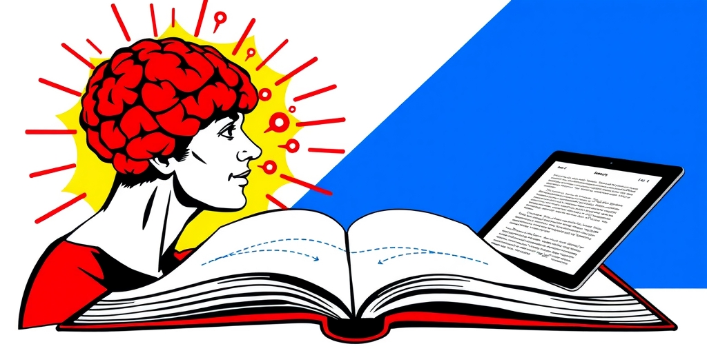
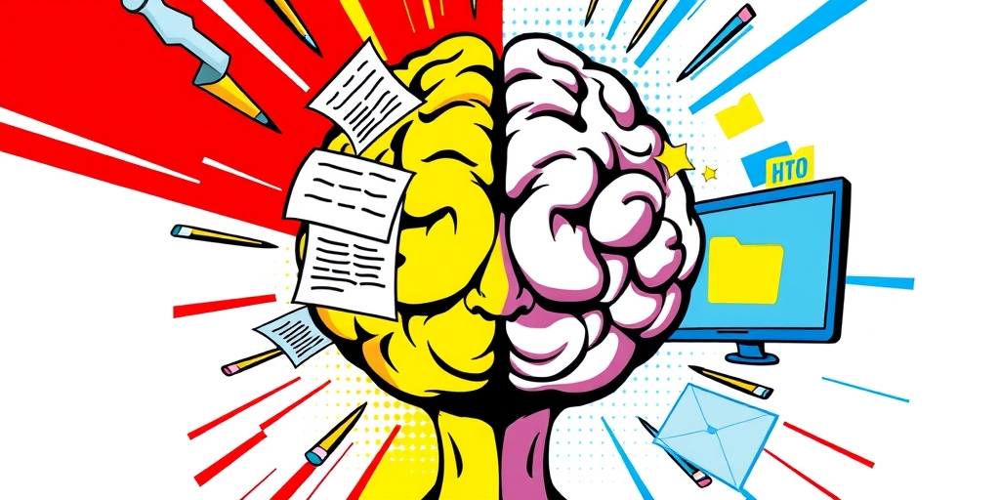

小汪老师的成长洞察 · 属于你的成长专栏
“纸质书自带记忆宫殿”——这句话听起来像恋物癖的自我安慰。但认知科学给出了一个冷峻的解释：你的大脑是一台用三维物理世界训练了百万年的机器，空间位置、触觉反馈、重量感知是它的原生操作系统。纸质书恰好跑在这套系统上。电子书把信息从物理中解耦，换来了效率，却关掉了你记忆系统里最古老的一条编码通道。问题远比阅读习惯之争深刻——它关乎认知接口的兼容性。

记者：有人说“纸质书自带记忆宫殿”，但我感觉这又是某种纸质书情怀党的话术——把翻书的沙沙声、油墨味这些东西浪漫化。真有科学依据吗？
小汪老师：记忆宫殿这个技术，古罗马人就在用，核心原理是把要记的信息绑定到具体的空间位置上，然后通过“在那个空间里行走”来提取。纸质书天然提供的就是这个。某段话出现在“左手页、靠上三分之一、大约全书厚度四分之一处”——这是一个固定的三维坐标。你不需要刻意训练，大脑自动就把这段话和这个位置绑定了。事后回忆的时候，脑子先出来的是“那段话在右下角，旁边有个图”，然后顺着空间线索拉出内容。
记者：等一下，电子书也有页码啊。Kindle右下角写着“第102页”。
小汪老师：电子书的“页”是流动的。你调大字号，原来的102页变成了157页。换个设备，排版全变了。这叫reflowable——内容是流动的。纸质书的文字和页面位置是永久锁定的——你十年后翻开同一本书，那段话还在同一个物理位置。稳定性是大脑构建空间记忆的前提。你不能在一个每次进来都变了布局的宫殿里找东西。
记者：所以电子书真的在剥夺记忆？
小汪老师：认知心理学里有个概念叫“空间记忆剥夺”。当信息位置不稳定时，大脑无法建立视觉-空间线索。读电子书的人事后回忆内容，调取的往往是抽象的语义碎片——“我记得这书说过某个观点”。读纸质书的人回忆时，先出来的经常是一幅空间画面——“那段话在书的左边、比较靠前、页面是淡黄色的”——然后顺着画面把内容拉出来。两种媒介激活了不同的记忆编码路径。纸质书读者依赖空间-视觉线索，电子书读者更多走语义通道。前者在提取时多了一条路径。
记者：厚度这件事也很有意思。读纸质书的时候，左手捏的越来越厚，右手越来越薄。你的身体知道“走”了多少。
小汪老师：对，这是“进度条”的原型。Kindle的百分比说“还剩30%”，但它不告诉你这30%是五毫米还是两厘米。厚度感知是三维的——它把信息量变成了物理量。你捏着那摞纸，手腕知道这本书有多重，肩膀知道你还要举多久。这种身体参与本身就是记忆的一部分。认知科学里叫“具身认知”——身体的动作和感知参与认知过程。
翻页这个动作，指尖的摩擦力，书脊的重量从左半本向右半本转移——这些东西直接参与记忆编码。它们就是记忆的一部分。你用电子书的时候，翻页变成了拇指在同一个光滑玻璃面上重复一模一样的小幅度滑动。没有物理梯度，没有重量转移——身体被排除在阅读之外了。
记者：你的意思是，用电子书的时候，这些身体线索全部消失了，所以记忆编码的维度就减少了？
小汪老师：对。就像你听一首歌，如果只是听旋律，和你一边听一边跟着打拍子、身体晃动，后者记住得更牢。身体参与不是附加的，它是认知编码的一条原生通道。电子书把这个通道关掉了。很多人没意识到记忆变差，因为他们把“读过”和“记住”混为一谈了。你问他们这本书讲了什么，他们能说出几个观点，但让他们复述论证链条，往往就卡住了。纸质书读者在复述时，经常能借助空间位置把逻辑链拉出来——因为论证结构被映射到了物理空间上。
记者：我确实有这种感觉——电子屏上有时眼睛明明扫过了，但脑子里什么都没留下，好像滑过去了。
小汪老师：这个有专门研究，叫“阅读滑行”。几个原因叠加。屏幕的触觉反馈是同质化的——你摸的永远是同一块玻璃。翻页动作没有物理变化——每次都是同等力度的滑。再加上多任务设备的环境暗示——你读书的这块屏幕同时也刷微博、回微信、看短视频。你的大脑被这块屏幕训练成了“浏览/扫描模式”。
纸质书是一个封闭系统——翻开封面那一刻，没有通知弹出来，没有另一个tab在闪。你的大脑切换到了“深度模式”。
记者：所以不是我注意力的问题，是设备本身在训练我的大脑用浅层方式处理信息？
小汪老师：问题出在环境设计上，不在你的意志力。你把需要深度处理的内容放在了设计给浅层浏览的设备上，然后困惑自己为什么记不住。就像一个运动员在沙滩上训练短跑，然后抱怨成绩下降——问题在场地，不在他的能力。媒介即讯息，麦克卢汉这句话在这里很具体：媒介的物质属性在塑造你的认知模式，而你浑然不觉。
记者：但纸质书也有分心的可能啊，我可以一边看书一边想别的事。
小汪老师：纸质书不保证深度阅读，但它至少没有主动往你脑子里塞干扰。电子设备是设计来争夺注意力的——app的通知、消息的红点、后台的更新，这些是商业模型驱动的。纸质书是一个“意图明确”的物体：你拿起它，你的身体和大脑都知道接下来要进入什么状态。电子设备是一个“意图模糊”的物体：它可以做一千件事，阅读只是其中一件，而且不是默认选项。
记者：那有没有折中方案？电子墨水屏呢？Kindle没有通知。
小汪老师：电子墨水屏解决了视觉疲劳和通知干扰，但没解决空间记忆的问题。它还是流动的页码、同质化的触觉、没有厚度反馈。你只能看到“页码在变”，不能感到“厚度在转移”。它介于两者之间——比液晶屏好，但比纸书还是少了一个维度。
记者：不过Kindle有一点是纸书做不到的：全文检索。你要查一个冷僻术语在哪一章出现过，三秒钟定位——纸质书得靠翻。这难道不是巨大的认知优势吗？
小汪老师：当然是。全文检索是一种“精准提取”能力，纸质书的空间记忆是一种“深度编码”能力。它们服务于不同的认知任务。需要深度理解、构建复杂逻辑框架、反复研读的——纸质书。资讯浏览、虚构类快读、旅途中便携——电子书。全文检索刚需的工具书——电子书完胜。
记者：你这个匹配论听起来很理性，但现实中大多数人根本没想过“认知任务和媒介要适配”这件事。他们只是随手抓起最方便的设备就读。
小汪老师：这就是问题的核心。媒介选择本应是认知策略决策，现实中却退化成了便利性决策。你把大脑需要三维锚点才能高效处理的东西，丢进了一个二维流动环境里，然后困惑自己为什么记不住。问题不在你的记忆力，而在于你把深度任务交给了浅层媒介。这个障碍是隐形的——你只会归咎于自己“年纪大了”“注意力不行了”。

记者：听你这么说，这个问题的根源比“纸质vs电子”深得多。它是不是触及了数字时代一个更根本的矛盾？
小汪老师：是的。人类大脑进化了几百万年，它的默认认知接口是三维物理世界。空间记忆、触觉反馈、物理进度感知——这些是基础操作系统，不是附加功能。你在物理世界里定位一个东西的能力，是狩猎采集时代刻进基因的——记住哪个方向有水源、哪个树丛里有浆果。这套空间导航系统极其强大，记忆宫殿技术不过是有意识地利用它。
纸质书恰好跑在这套原生协议上——它把信息保留在物理空间中。电子书在功能上是碾压级优势，但在认知接口上天然劣势：它把三维物理锚点降维成了二维流动像素。就像你用USB-C转HDMI——能连上，但协议不是原生的，有转换成本。
记者：这个“降维”的代价，我们是不是在其他地方也在付？
小汪老师：太多了。你有没有发现，在白板上画过一遍的流程图比在电脑上画的记得更牢？手写笔记比打字笔记在概念理解测试中得分更高？这些都是同一个原理的外延——当身体参与认知过程，当信息绑定在物理空间和物理动作上，编码深度完全不同。数字工具在效率上的优势是压倒性的，但“效率”不等于“编码深度”。有时候，更慢的过程产出了更强的记忆。
记者：那我们应该怎么办？回到纸和笔的时代吗？
小汪老师：不需要倒退，需要的是意识到“接口兼容性”这个问题。数字工具不是敌人，但你要知道它的局限在哪里。当你需要深度编码的时候，给自己创造一个物理锚点——打印出来读，或者在纸上画一遍逻辑图，甚至只是在读电子书的时候刻意在脑子里构建一个虚拟的空间地图。大脑的原生协议改不了，但你可以主动给它喂它擅长处理的信息格式。关键是别再默认“所有阅读都一样”——媒介从来不是透明的管道，它在塑造你记住什么、怎么记住、以及最终你是谁。
尾声
下次你拿起Kindle，不妨做个小实验。读完一章后，闭上眼睛，试着回忆刚才那段让你拍大腿的论证——它出现在屏幕的哪个位置？左上角还是右下角？前面翻了几页？后面还剩多少？你会发现，这些在纸质书上毫不费力就能浮现的空间线索，在电子屏上几乎一片空白。你的记忆力没有衰退，但你无意中关掉了大脑最擅长的空间索引。
然后你再想想：你每天有多少需要深度处理的信息，是在这样一片空白的空间里滑过去的？数字工具给了我们前所未有的信息吞吐量，但“吞吐”不等于“消化”。效率的代价，有时候要到你想用那个知识的时候才显现出来。
小汪老师的成长洞察 · 属于你的成长专栏